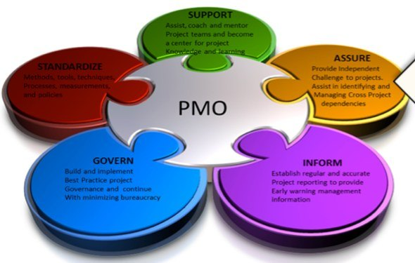

End-to-end delivery, from capture to cloud.
Four integrated service pillars, so primes and agencies can bring one accountable teammate to programs that span management, security, technology, and the public.
Federal capture, execution, and compliance delivery.
Programs succeed on execution. Our program and project managers bring detailed planning, scheduling, budgeting, and performance tracking across the full lifecycle — from concept through implementation and review.
- Program & project management — PMO standup, schedule, cost, and performance reporting
- Prime and subcontract execution — staffing, transition, and on-contract delivery
- Capture strategy & proposals — opportunity shaping, teaming, and compliant responses
- Acquisition planning & analysis — requirements, market research, and evaluation support
- Strategic planning & reporting — goals, metrics, and decision-ready analysis
- Administrative & professional support — so mission staff can focus on the mission

CMMC, NIST, and Zero Trust — implemented, not just assessed.
Protecting Controlled Unclassified Information is now a condition of award. We help organizations understand their gaps, close them, and keep evidence current — using the same control framework we apply to our own environment.
- CMMC Level 2 implementation support under 32 CFR Part 170
- NIST SP 800-171 Rev. 2 remediation — 110 requirements across 14 families
- System Security Plans and structured assessment evidence
- Zero Trust architecture — identity, devices, applications, data, infrastructure, network
- Continuous control monitoring with Microsoft Defender for Cloud
- Enterprise risk services — focus resources where risk is highest
Our own posture is CMMC Level 2 readiness: the control set is documented and implementation is in progress. No C3PAO assessment has been performed and no CMMC certification is claimed. See our compliance posture.
Government cloud, architected for controlled data.
We design, migrate, and operate Microsoft government cloud environments with a clear tenant strategy — so controlled data stays where it belongs and teams can still collaborate.
- GCC High architecture & migration — tenant design, identity, and data movement
- Azure Government build-out — PROD, NONPROD, and SANDBOX landing zones
- Enterprise systems integration — connecting cloud, line-of-business, and ERP systems
- Cloud operations & lifecycle support — monitoring, patching, and cost governance
- IT infrastructure services — help desk, deployment (IMAC), asset inventory
- Network design & ITIL service management — from local networks to enterprise
Trusted outreach that reaches people programs miss.
Through Bright Community Solutions, Inc., our 501(c)(3) partner, we mobilize a coalition of community-based organizations to deliver health, workforce, and civic services in hard-to-reach neighborhoods.
- Health equity program delivery — screenings, vaccine education, wellness
- Workforce & digital inclusion — referrals, skills, and access
- Coalition & civic engagement — 22 certified Volunteer Deputy Registrars
- Disaster response support — food, water, and resource distribution
Flexible ways to work together.
Prime contracts
Direct awards where BCS leads delivery and brings in specialized teammates.
Start a conversationSubcontracting & teaming
Add CMMC-aligned cloud, cyber, PM, or community-outreach depth to your bid.
Discuss teamingCapability briefings
A focused walkthrough of our capabilities, past performance, and posture.
Request a briefingCommunity partnerships
Co-host events, fund programs, or extend public-health outreach.
Partner with usNAICS codes
Primary codes are listed first.
| Bright Consulting Solutions LLC | Description |
|---|---|
| 541519 Primary | Other Computer Related Services |
| 541611 | Administrative Management & General Management Consulting |
| 541612 | Human Resources Consulting Services |
| 541614 | Process, Physical Distribution & Logistics Consulting |
| 541618 | Other Management Consulting Services |
| Bright Community Solutions, Inc. | Description |
|---|---|
| 813410 Primary | Civic & Social Organizations |
| 624230 | Emergency & Other Relief Services |
| 813212 | Voluntary Health Organizations |
Need a teammate for a specific requirement?
Send us the solicitation or a short description and we will tell you plainly where we fit.